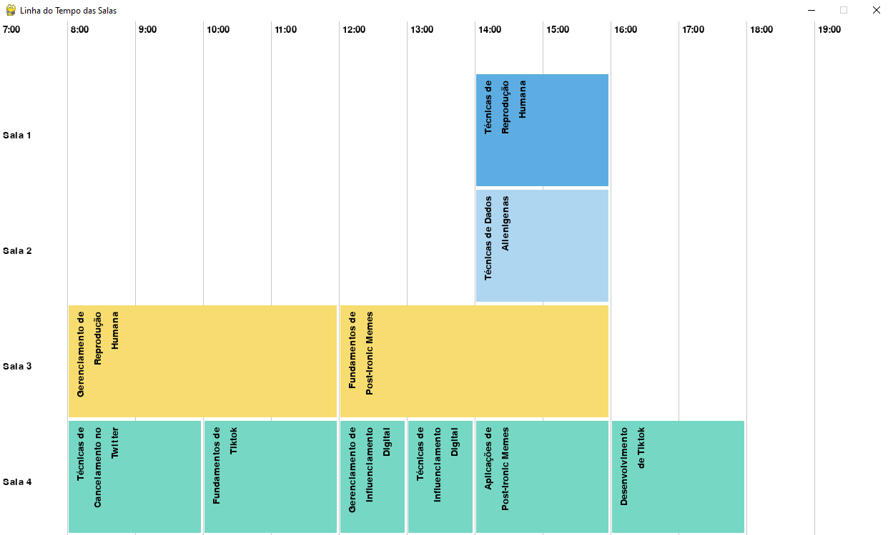

Problemas de Satisfação de Condições (CSPs)
Impressões iniciais
Como engenheiro de software, você provavelmente já se deparou com problemas complexos que envolvem várias condições e restrições. Nesse contexto, os Problemas de Satisfação de Restrições (CSPs) são extremamente relevantes.
Imagine que você está desenvolvendo um sistema de agendamento. Há várias variáveis em jogo: as disponibilidades de tempo, os recursos necessários, as preferências dos usuários, entre outros. Aqui, cada variável (X) representa um elemento desse sistema - por exemplo, um intervalo de tempo específico ou um recurso. Cada uma dessas variáveis tem um domínio (D), que é o conjunto de valores possíveis que ela pode assumir. Por exemplo, o domínio de um intervalo de tempo pode ser as horas do dia durante as quais uma sala está disponível.
Agora, as restrições (C) são as condições que determinam como essas variáveis podem ser combinadas. Por exemplo, uma sala não pode ser reservada para dois eventos diferentes ao mesmo tempo. O desafio em CSPs é encontrar uma atribuição para todas as variáveis que satisfaça todas essas restrições.
Resolver CSPs pode ser complexo, especialmente quando temos muitas variáveis e restrições. Uma abordagem é usar backtracking, que é um tipo de pesquisa em profundidade. Basicamente, você tenta uma solução, e se encontrar um conflito, volta atrás (backtrack) e tenta uma abordagem diferente. É um método poderoso, mas pode ser ineficiente para problemas muito grandes.
Outras técnicas incluem algoritmos de consistência local, que tentam reduzir o tamanho do problema eliminando valores que não podem fazer parte de uma solução válida. Também temos heurísticas de pesquisa, como a busca com propagação de restrições, que tentam antecipar e resolver conflitos antes que eles ocorram.
Em resumo, os CSPs são uma ferramenta poderosa em IA e ciência da computação, ajudando-nos a lidar com problemas complexos onde várias condições e restrições precisam ser satisfeitas simultaneamente. Eles são aplicáveis em uma variedade de campos, desde planejamento e agendamento até design de circuitos e jogos. Como engenheiros de software, entender e aplicar CSPs pode nos ajudar a criar soluções mais eficientes e eficazes para problemas complexos.
Representação Atômica vs Fatorada
A representação atômica de um estado é similar a uma representação de caixa preta, ou seja, não temos informações sobre suas propriedades e componentes internos. Quando temos uma representação mais complexa e expressiva, temos uma representação fatorada, onde temos acesso aos atributos de um estado.
graph TD
subgraph "Representação Atômica"
A[Estado atômico A] --> B[Estado Atômico B] --> C[Estado Atômico C]
end
subgraph "Representação Fatorada"
subgraph Estado_A
F[Estado fatorado A]
F -->|Detalhe 1| J[Propriedade 1]
F -->|Detalhe 2| K[Propriedade 2]
F -->|Detalhe 3| I[Propriedade 3]
end
subgraph Estado_B
X[Estado fatorado A]
X -->|Detalhe 1| Y[Propriedade 1]
X -->|Detalhe 2| Z[Propriedade 2]
X -->|Detalhe 3| L[Propriedade 3]
end
Estado_A ---> Estado_B
endAo trabalhar com CSPs, iremos dar ênfase a representação fatorada do estados pois precisamos ter uma visão mais granular sobre o problema, e tendo a possibilidade de quebrar o problema em subproblemas facilita a encontrar a solução.
Definindo Problemas de Satisfação de Condições
A idéia principal de usar uma CSP se baseia em achar uma solução eliminando grandes porções do espaço de busca ao identificar condições neste espaço de busca que impossibilitam o resultado.
Em termos mais técnicos, um CSPs são tipicamente definidas por três componentes:
- Variáveis (X): Um conjunto finito de variáveis que precisam ser resolvidas.
- Domínios (D): Um conjunto finito de valores que as variáveis podem assumir.
- Restrições (C): Um conjunto de condições que as soluções devem satisfazer.
Tendo definido isso, podemos dizer que CSPs lidam com atribuições de valores às variáveis. - Quando uma atribuição não viola nenhuma restrição, ela é chamada de consistente; - Quando todas as variáveis recebem um valor, a atribuição é completa; - Quando nem todas as variáveis recebem um valor, a atribuição é parcial;
Então para definir uma solução, precisamos que ela seja consistente e completa. Logo, uma solução parcial é aquela que é completa porém nem todas as variáveis são atribuias a algum valor. Soluções de CSP são problemas NP-Completo em geral.
Tipos de Condições
Condições necessárias
Iremos dar ênfase aos seguintes tipos de condições:
- Unárias
- Binária
- Alta Ordem (Ternária+)
- Global
Restrições Unárias
- Conceito: As restrições unárias são as mais simples em CSPs. Elas afetam uma única variável.
- Exemplo: Uma restrição que especifica que uma variável ( X ) deve ser maior que 5.
Restrições Binárias
- Conceito: As restrições binárias envolvem duas variáveis e estabelecem uma relação entre elas.
- Exemplo: Uma restrição que exige que duas variáveis ( X ) e ( Y ) sejam diferentes entre si.
Restrições de Alta Ordem (Ternária+)
- Conceito: As restrições de alta ordem envolvem três ou mais variáveis. Elas são mais complexas que as unárias e binárias e permitem expressar relações entre grupos de muitas variáveis.
- Exemplo: Uma restrição que determina que a soma das variáveis ( X, Y, ) e ( Z ) deve ser igual a um valor específico.
Restrições Globais
- Conceito: As restrições globais afetam um grande número de variáveis, às vezes todas em um CSP. Elas são úteis para expressar condições abrangentes que envolvem múltiplas variáveis.
- Exemplo: Uma restrição de que todas as variáveis em um conjunto devem ter valores diferentes, como na regra do Sudoku, onde cada número deve aparecer apenas uma vez em cada linha, coluna e bloco.
Qualquer uma dessas condições de CSP podem ser reduzidas a condições biárias.
Condições de preferência
Ao contrário das condições necessárias, que são obrigatórias para resolução do CSP, as condições de preferência servem para encontrarmos uma solução preferida.
Por exemplo:
Em um jogo onde um mago precisa atravessar o campo de batalha, ele tem diversos caminhos para escolher que satisfazem as condições que o mago irá chegar ao outro lado do campo vivo e sem atacar nenhum aliado. Mas o mago pode preferir ir por um caminho onde ele enfrente o máximo de inimigos, ou então pode preferir ir por um caminho onde há mais espólios, ou então pode preferir ir por um caminho onde ele perca o mínimo de vida possível. Isso tudo são preferências, e não uma condição obrigatória.
Propagação de condição
Para ocorrer a propagação de condições, um algoritmo CSP reduz o domínio de valores que uma variável pode assumir, que pode reduzir o domínio de outra variável e assim sucessivamente. O objetivo de propagação de condições é garantir a consistência local.
Para explicar o parágrafo acima, iremos explicar como ocorre o funcionamento da propagação de condições em CSPs:
Funcionamento
Redução de Domínio: Inicialmente, cada variável em um CSP tem um conjunto de possíveis valores que pode assumir (seu domínio). Quando uma restrição é aplicada, o domínio de uma variável pode ser reduzido. Por exemplo, se temos uma variável ( X ) com um domínio de {1, 2, 3, 4, 5} e uma restrição unária ( X > 2 ), o domínio de ( X ) é reduzido para {3, 4, 5}.
Efeito Cascata: Esta redução pode ter um efeito cascata. Considerando uma restrição binária entre ( X ) e ( Y ), a alteração no domínio de ( X ) pode levar a uma redução no domínio de ( Y ). Por exemplo, se ( Y ) deve ser diferente de ( X ) e o novo domínio de ( X ) é {3, 4, 5}, então os valores correspondentes são removidos do domínio de ( Y ).
Consistência Local: O objetivo da propagação é alcançar a consistência local. Isso significa que para cada variável e suas restrições diretas (com outras variáveis), existe pelo menos uma atribuição válida que satisfaz as restrições.
Impacto no Desenvolvimento de Software
Para um engenheiro de software, a questão de propagação de condições pode ter as seguintes importâncias:
-
Otimização de Algoritmos: Utilizar a propagação de condições em CSPs pode significar a diferença entre um algoritmo que resolve problemas em tempo hábil e um que não é viável para uso prático.
-
Complexidade Computacional: A propagação eficaz de condições pode reduzir drasticamente o espaço de busca, diminuindo a complexidade computacional do problema.
-
Aplicações Práticas: Em sistemas de agendamento, planejamento de recursos, ou em soluções de problemas lógicos como Sudoku, a propagação de condições é uma técnica essencial para garantir soluções eficientes.
Em resumo, a propagação de condições em CSPs é uma técnica fundamental para qualquer engenheiro de software envolvido na solução de problemas complexos que requerem otimização e eficiência. Ela não só reduz o espaço de busca, como também assegura a consistência local das soluções, dois aspectos cruciais para a eficiência dos sistemas que desenvolvemos e mantemos.
Consistência
Consistência de Nó
A consistência de nodo ocorre quando todas as restrições unárias são satisfeitas. Isso significa que cada variável individualmente deve satisfazer as restrições que lhe são impostas. É o tipo mais básico de consistência e geralmente é o ponto de partida para algoritmos de CSP. Envolve a verificação e a adequação dos domínios de variáveis individuais para atender a restrições unárias.
Consistência de Arco
Um arco entre duas variáveis (X) e (Y) é consistente se, para cada valor no domínio de (X), existe algum valor no domínio de (Y) que satisfaça a restrição entre (X) e (Y). É crucial em CSPs com restrições binárias. Algoritmos como o AC-3 (Algorithm for Arc Consistency) são usados para alcançar a consistência de arco, removendo valores dos domínios das variáveis que não podem participar de soluções válidas.
Consistência de Trajeto
Um CSP é dito trajeto consistente se, para cada trio de variáveis, todas as combinações de valores que satisfazem as restrições binárias entre elas são compatíveis com as restrições terciárias aplicáveis. É mais complexa e menos comum que a consistência de nodo e arco. Envolve a consideração de trios de variáveis e é útil em CSPs onde as relações entre três variáveis são cruciais.
Consistência Global
Um CSP é globalmente consistente se, para cada subconjunto de variáveis e para cada atribuição possível a esse subconjunto que satisfaz as restrições sobre ele, é possível estender essa atribuição ao resto das variáveis sem violar nenhuma restrição. É o tipo mais forte de consistência, mas também o mais difícil de alcançar e verificar. Geralmente, não é prático verificar a consistência global para problemas grandes, mas é um objetivo desejável.
Consistência K (k-Consistency)
Um CSP é k-consistente se para qualquer conjunto de (k-1) variáveis e uma atribuição consistente a essas variáveis, a extensão dessa atribuição a uma k-ésima variável é consistente com as restrições do CSP. A consistência k oferece um meio-termo entre a simplicidade da consistência de nó/arco e a complexidade da consistência global. A consistência 2, por exemplo, é equivalente à consistência de arco.
Algoritmos
Backtracking
É o algoritmo mais básico e direto para resolver CSPs. Ele tenta atribuir valores a cada variável sequencialmente e volta atrás (backtrack) quando uma restrição é violada. Utilizado em problemas de CSP mais simples e é a base para muitos outros algoritmos mais sofisticados.
Exemplo em Python:
def backtrack(assignment, csp):
# Verifica se a atribuição está completa
if len(assignment) == len(csp.variables):
return assignment
# Seleciona uma variável ainda não atribuída
var = select_unassigned_variable(assignment, csp)
# Testa todos os valores possíveis para a variável
for value in csp.domains[var]:
# Checa se a atribuição atual é consistente com as restrições do CSP
if is_consistent(var, value, assignment, csp):
assignment[var] = value # Atribui o valor à variável
result = backtrack(assignment, csp) # Continua recursivamente
if result:
return result # Retorna a solução, se encontrada
assignment.pop(var) # Caso contrário, remove a atribuição e tenta outra
return False # Retorna False se nenhuma atribuição válida for encontrada
Algoritmo de Arc Consistency (AC-3)
AC-3 é um algoritmo para alcançar a consistência de arco em CSPs. Ele examina sistematicamente pares de variáveis e elimina valores inconsistentes dos seus domínios. Comumente usado como um pré-processamento em CSPs para reduzir o espaço de busca antes de aplicar algoritmos como backtracking.
Exemplo em Python:
def ac3(csp):
# Inicializa a fila com todos os arcos do CSP
queue = [(Xi, Xj) for Xi in csp.variables for Xj in csp.neighbors[Xi]]
# Processa cada arco na fila
while queue:
Xi, Xj = queue.pop(0) # Remove um arco da fila
# Revisa o arco e atualiza o domínio de Xi se necessário
if revise(csp, Xi, Xj):
if not csp.domains[Xi]:
return False # Retorna False se o domínio de Xi ficar vazio
# Adiciona novamente à fila todos os arcos que afetam Xi
for Xk in csp.neighbors[Xi]:
if Xk != Xj:
queue.append((Xk, Xi))
return True # Retorna True se todos os arcos forem consistentes
def revise(csp, Xi, Xj):
"""Revisa o domínio de Xi para garantir consistência com Xj.
Args:
csp: O problema de CSP, contendo variáveis, domínios e restrições.
Xi: A variável cujo domínio está sendo revisado.
Xj: A variável vizinha de Xi.
Returns:
True se houver alguma revisão no domínio de Xi, False caso contrário.
"""
revised = False
for x in csp.domains[Xi][:]: # Copia do domínio para evitar modificar durante iteração
# Se não existe nenhum valor em Xj que satisfaça a restrição com x, remove x do domínio de Xi
if not any(is_satisfied(x, y, csp.constraints[Xi, Xj]) for y in csp.domains[Xj]):
csp.domains[Xi].remove(x)
revised = True
return revised
def is_satisfied(x, y, constraint):
"""Verifica se a restrição entre x e y é satisfeita.
Args:
x: Valor da variável Xi.
y: Valor da variável Xj.
constraint: A restrição entre Xi e Xj.
Returns:
True se a restrição é satisfeita, False caso contrário.
"""
# Implementação específica da restrição
pass
Min-conflicts
Um algoritmo de busca local que seleciona uma variável que está em conflito e muda seu valor para minimizar o número de conflitos. Particularmente eficaz em problemas com uma grande densidade de restrições. É útil em CSPs de grande escala onde uma solução ótima não é necessária, mas uma solução "boa o suficiente" é aceitável.
Exemplo em Python:
import random
def min_conflicts(csp, max_steps=1000):
def conflicts(var, value):
# Conta o número de conflitos se 'var' for atribuído a 'value'
return sum(1 for neighbor in csp.neighbors[var] if value == csp.assignment[neighbor])
for _ in range(max_steps):
# Identifica todas as variáveis que estão em conflito
conflicted = [var for var in csp.variables if conflicts(var, csp.assignment[var]) > 0]
# Se não há conflitos, a solução atual é retornada
if not conflicted:
return csp.assignment
# Escolhe aleatoriamente uma variável em conflito
var = random.choice(conflicted)
# Escolhe o valor para 'var' que minimiza o número de conflitos
value = min(csp.domains[var], key=lambda val: conflicts(var, val))
# Atribui o valor escolhido a 'var'
csp.assignment[var] = value
return None # Retorna None se nenhuma solução for encontrada dentro do limite de passos
# Nota: Este é um exemplo conceitual. A implementação real exigiria uma estrutura de dados CSP mais detalhada.
Estrutura de Problemas
Arvore de Busca e Pruning: Utilizando árvores de busca para representar o espaço de busca, podemos dizer que os algoritmos de CSP são mais eficientes que os algoritmos de procura tradicionais, pois eles conseguem realizar podas eficientes na árvore de busca. Algoritmos de CSP são eficientes em identificar e descartar ramos da árvore de busca que não podem levar a soluções válidas. Isso é feito por meio da verificação de restrições: se uma atribuição parcial viola uma restrição, não há necessidade de explorar mais adiante nesse ramo.
A afirmação de que "algoritmos baseados em CSPs são, na prática, mais eficientes que algoritmos de procura tradicionais" pode ser considerada correta em muitos contextos, especialmente em relação à capacidade desses algoritmos de realizar podas eficientes na árvore de busca, como no exemplo do problema de coloração do mapa da Austrália. Vamos analisar a afirmação em detalhes:
Comparação com Procura Tradicional: Em algoritmos de busca tradicionais, como busca em profundidade ou largura, todas as possíveis combinações teriam que ser exploradas de maneira mais uniforme, sem a vantagem de eliminar opções com base na violação de restrições.
Portanto, é correto dizer que os algoritmos de CSP, ao aplicarem restrições de maneira eficaz, podem ser mais eficientes do que métodos de busca tradicionais, especialmente em problemas onde as restrições desempenham um papel crucial na definição de soluções válidas. Essa eficiência em CSPs é particularmente notável em problemas complexos e de grande escala, onde a habilidade de reduzir rapidamente o espaço de busca é essencial para encontrar soluções em um tempo razoável.
Discussões
Um algoritmo não discutido em sala de aula, e que é relacionado aos algoritmos discutidos, temos o AC-6:
Algoritmo AC-6
O AC-3 e o AC-6 são algoritmos projetados para impor a consistência de arco em problemas de satisfação de restrições (CSPs), mas diferem em eficiência e complexidade. O AC-3, mais simples de implementar, revisa todos os arcos que incidem sobre uma variável cada vez que um valor é removido de seu domínio, o que pode levar a revisões repetitivas e desnecessárias. Em contraste, o AC-6, mais complexo na implementação, utiliza estruturas de dados auxiliares para rastrear especificamente quais valores são consistentes entre as variáveis, reduzindo assim o número total de revisões. Isso torna o AC-6 geralmente mais rápido do que o AC-3, especialmente em CSPs com uma grande quantidade de restrições e domínios extensos, pois minimiza o trabalho redundante e melhora a eficiência global do processo de busca por consistência.
Implementar o algoritmo AC-6 é consideravelmente mais complexo do que AC-3 devido à necessidade de manter estruturas de dados adicionais para rastrear as relações de suporte entre os valores das variáveis. No entanto, posso fornecer um esqueleto de como o algoritmo AC-6 seria estruturado em Python, com comentários que explicam cada parte do processo.
Simplificando o algoritmo AC-6, ele funciona da seguinte maneira... Exemplo em python:
class AC6:
def __init__(self, csp):
self.csp = csp # CSP problem with variables, domains, and constraints
self.queue = [] # Queue of arcs
self.supports = {} # Support structure to keep track of consistent values
def initialize(self):
# Initialize the support structure and queue
for xi in self.csp.variables:
for xj in self.csp.neighbors[xi]:
for a in self.csp.domains[xi]:
# Initialize supports to keep track of values in xj's domain that are consistent with a
self.supports[(xi, a, xj)] = set(val for val in self.csp.domains[xj] if self.csp.is_consistent(xi, a, xj, val))
if not self.supports[(xi, a, xj)]:
self.csp.domains[xi].remove(a)
if len(self.csp.domains[xi]) == 0:
return False # No solution exists
for b in self.csp.domains[xj]:
if not any(self.csp.is_consistent(xi, a, xj, b) for a in self.csp.domains[xi]):
self.queue.append((xj, xi, b)) # Add arc to queue if b has no support
return True
def revise(self, xi, xj, b):
# Revise the domain of xi based on the value b of xj
revised = False
for a in self.csp.domains[xi][:]: # Iterate over a copy to allow removal
if b not in self.supports[(xi, a, xj)]:
self.csp.domains[xi].remove(a) # Remove a if it is not supported by b
revised = True
if len(self.csp.domains[xi]) == 0:
return False # No solution exists
return revised
def run(self):
# Main loop of AC-6
if not self.initialize():
return False # No solution exists
while self.queue:
xj, xi, b = self.queue.pop(0)
if self.revise(xi, xj, b):
for xk in self.csp.neighbors[xi]:
for a in self.csp.domains[xk]:
if a not in self.supports[(xk, a, xi)]:
self.queue.append((xi, xk, a)) # Add arc to queue if a loses support
return True # CSP is arc consistent
Projetos e problemas
Problema de agendamento de eventos
Imagine um problema onde temos vários eventos e temos que agendar esses eventos em um número definido de salas disponíveis em uma universidade. Cada evento tem um horário de início e fim. Então precisamos definir quais eventos ocorrerão em quais salas.
Para resolver esse problema, podemos usar algoritmos de CSP; Em modos práticos
podemos utilizar uma biblioteca Python chamada python-constraint a fim de
definir variáveis, domínios e restrições.
Essa biblioteca simplifica a confecção de um script que resolva uma CSP; Utilizando os algoritmos de Backtracking, Recursive backtracking e Min-Conflits essa biblioteca resolve problemas de domínios finitos.
Para demonstrar a resolução do problema, escrevi um script Python em português com comentários em linha e Docstrings para deixar o mais explícito possível o funcionamento do código.
O trecho de código abaixo é a parte principal da resolução da CSP no projeto:
def resolver_agendamento(eventos, num_salas=4):
"""
Resolve o problema de agendamento de eventos em salas.
Args:
eventos (dict): Dicionário com os eventos e seus horários.
num_salas (int): Número de salas disponíveis.
Returns:
dict: Dicionário com os eventos e seus horários nas respectivas salas.
"""
problem = Problem()
# Adicionando eventos como variáveis com seus domínios (salas e horários)
for evento, horario in eventos.items():
inicio, fim = horario
horarios_possiveis = [
(sala, (inicio, fim)) for sala in range(1, num_salas + 1)
]
problem.addVariable(evento, horarios_possiveis)
# Adicionando restrição de não sobreposição
for evento1 in eventos:
for evento2 in eventos:
if evento1 < evento2:
problem.addConstraint(sem_sobreposicao, (evento1, evento2))
# Encontrando uma solução
return problem.getSolution()
É fácil ver como a biblioteca simplifica a resolução de CSPs. Para um engenheiro de software, em cenários de mundo real, o uso de bibliotecas que agilizam o desenvolvimento e permitem que o engenheiro se concentre mais na lógica do problema do que na implementação de algoritmos é extremamente vantajoso.
A restrição principal do problema é que os eventos não podem ser sobrepostos.
def sem_sobreposicao(evento1, evento2):
"""
Verifica se dois eventos não estão sobrepostos.
Args:
evento1 (tuple): Tupla com o nome do evento e seu horário.
evento2 (tuple): Tupla com o nome do evento e seu horário.
Returns:
bool: True se não há sobreposição, False caso contrário.
"""
sala1, (inicio1, fim1) = evento1
sala2, (inicio2, fim2) = evento2
return sala1 != sala2 or fim1 <= inicio2 or inicio1 >= fim2
No repositório do respositório do presente documento,
é possível encontrar o código na pasta csp. [Link para a pasta do projeto]
Basta executar python main.py para ver o resultado do script.
Utilizei pygame para renderizar o resultado do script em uma janela.

O problema lê o arquivo json mais novo na pasta do algoritmo e calcula o resultado.
Então é possível gerar novos problemas e resolver com o script.
Basta executar python generate_events.py para gerar um novo json com as novas
condições de eventos.
Bibliografia
https://folivetti.github.io/courses/IA/PDF/Aula04.pdf
https://en.wikipedia.org/wiki/AC-3_algorithm
https://www.cs.cmu.edu/~arielpro/15381f16/c_slides/781f16-3.pdf
https://www.cs.ubc.ca/~kevinlb/teaching/cs322%20-%202009-10/Lectures/CSP3.pdf
https://ktiml.mff.cuni.cz/~bartak/constraints/stochastic.html
https://www.slideserve.com/asis/maintaining-arc-consistency-ac-6-powerpoint-ppt-presentation
https://www.researchgate.net/publication/220565739_Propositional_Satisfiability_and_Constraint_Programming_A_comparative_survey
https://pypi.org/project/python-constraint/